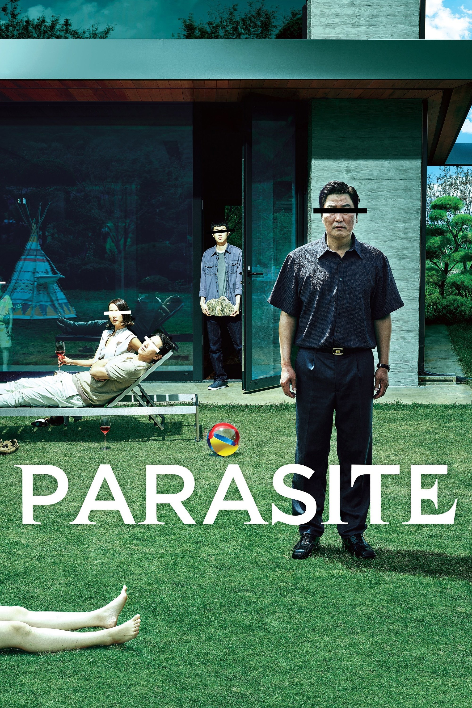
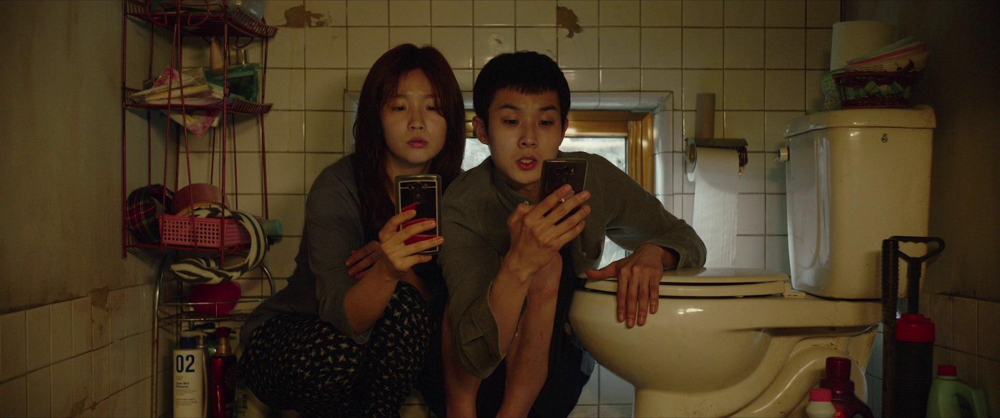
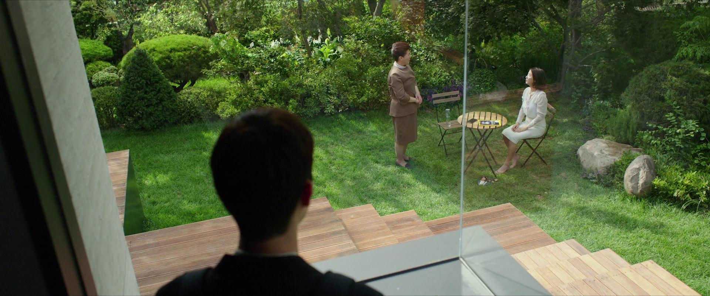
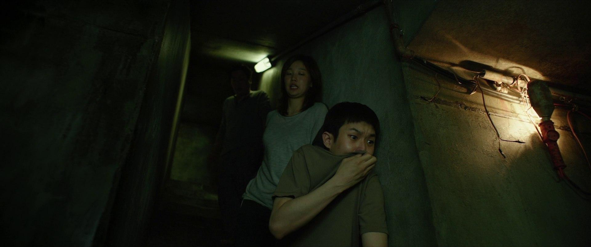

Film Psychology
Peeling the Mask: The Psychological Unravelling in Parasite
Exploring the psychology of class, deception, and identity through Bong Joon-ho's Oscar-winning masterpiece.
Exploring the psychology of class, deception, and identity through Bong Joon-ho's Oscar-winning masterpiece.

"You know what kind of plan never fails? No plan at all." — Ki-taek
Bong Joon-ho's Parasite is often praised for its social commentary on class divide — but underneath its architecture of satire and suspense lies a more intimate, disturbing portrait of psychological erosion. Each character is, in essence, a shell: polished, curated, masked — until the film forces them to confront who they truly are beneath their personas.
In Parasite, everyone is pretending. The poor pretend to be rich; the rich pretend they are safe. But pretense is costly. It comes with the price of performance, suppression, and detachment from the raw parts of the self. Over time, the performance becomes unsustainable — and when it breaks, what is left is chaos.
This essay explores how the central characters — the Kims and the Parks — lose their psychological shells. It is a study in adaptive behavior, shame, class-induced trauma, and the invisible labor of self-control. More than a story of social hierarchy, Parasite is about the mind's struggle to stay intact in a world that will not let people be seen for who they truly are.
The Kim family — Ki-taek (father), Chung-sook (mother), Ki-woo (son), and Ki-jung (daughter) — begin the film as survivors. They are poor, but resourceful. Their daily life is marked by hypervigilance, improvisation, and emotional detachment, all of which are adaptive behaviors rooted in long-term poverty — often associated with heightened stress reactivity, executive function impairment, and identity diffusion.

Over time, individuals living in chronic scarcity begin to define themselves not by who they are, but by what they must become in any given moment. Identity becomes fluid — not out of freedom, but out of necessity. Psychologists refer to this as identity diffusion: a state in which the sense of self is fragmented, unstable, and shaped almost entirely by external demands. For the Kims, survival itself becomes the identity.
When the opportunity to infiltrate the Park household arises, the Kims do not hesitate. Their adaptability — once a tool for getting through the day — becomes a vehicle for deception. Each family member slips seamlessly into a fabricated persona. The transition is so smooth it feels almost natural, which is precisely what makes it so psychologically revealing.
When Ki-woo gets the tutoring job, he crosses a boundary — physical and psychological. He steps into a world that was never meant for him. But instead of resisting the illusion, he leans into it. He changes his name to Kevin, fabricates a university background, and plays the role with increasing confidence.
This is impostor syndrome inverted: rather than feeling like a fraud who doesn't belong, Kevin convinces himself that he truly does. He embodies the psychological defense of identification with the aggressor — a concept rooted in psychoanalytic theory — where he unconsciously adopts the values, mannerisms, and self-perception of the class he is infiltrating. The danger is not that he is pretending. It is that he begins to believe his own fiction. When the line between performance and identity dissolves, the collapse that follows is all the more devastating.
Ki-woo's brain injury at the film's climax is not incidental — it is symbolic. The organ most responsible for planning, ambition, and self-narrative is literally damaged. His post-recovery fantasy of one day buying the Park house is not a hopeful ending; it is a coping mechanism, a final retreat into delusion when reality has become too fractured to bear.

Ki-jung is the most composed and adaptable member of the family. She becomes "Jessica" the art therapist, delivering a performance so convincing it borders on psychopathy — not in the clinical sense, but in her apparent lack of emotional hesitation. She is a study in compartmentalization: cutting off parts of herself to become precisely what the environment demands.
Compartmentalization is a psychological defense mechanism in which a person mentally separates conflicting thoughts, emotions, or identities to avoid the discomfort of holding them simultaneously. Ki-jung does not experience visible moral conflict because she has walled off the parts of herself that might. This is extraordinarily efficient in the short term — and extraordinarily fragile in the long term.
But her composure is itself a shell. She dies in the final act — not because she was less intelligent than the others, but because emotional repression does not equate to psychological resilience. When the chaos erupts, her practiced detachment offers no armor against physical reality. Her death is the film's most brutal reminder that performance, no matter how perfect, cannot protect the body from the world it has tried so hard to manage.
Ki-taek is the most tragic figure in the film. He starts as an affable, passive father — humiliated by his inability to provide, but always playing his failures off with jokes. He laughs through discomfort, a response deeply characteristic of internalized shame.
Shame, unlike guilt, is not about what one has done — it is about who one is. Guilt says, "I did something bad." Shame says, "I am something bad." It corrodes the self from within, and when triggered, often erupts outward as rage. It is one of the most socially corrosive emotions precisely because it is so rarely named aloud.
The microaggressions from Mr. Park — particularly the repeated, offhanded comments about Ki-taek's "smell" — chip away at this psychological shell with quiet, devastating efficiency. Each comment is delivered casually, as though it barely registers. But for Ki-taek, each one is a small act of dehumanization. Ki-taek's breakdown is slow, quiet, and deeply human. By the end, when he stabs Mr. Park, it is not the result of a single offense. It is the unbearable accumulation of being made to feel invisible, inferior, and less than human — until the self, having nowhere left to retreat, turns outward with devastating finality.
While the Kim family embodies the role of scarcity in emotional detachment, the Park family shows a different side of the same coin: how privilege can create its own forms of distance and performance. They may live above ground — literally and socially — but their psychological lives are no less fractured. Their privilege has created a bubble of detachment: a life so curated that they have become emotionally dull, intellectually disengaged, and psychologically unprepared for disruption.

Mrs. Park is portrayed as naïve, overly trusting, and emotionally fragile. She relies heavily on others to manage her home, her children, and even her emotional responses. Her psychological profile leans toward learned helplessness — not born from trauma, but from overprotection and emotional outsourcing. She is not incapable; she is simply unused to discomfort. Her wealth has insulated her so thoroughly from stress that her emotional resilience has atrophied.
Psychologists have noted that chronic exposure to comfort and certainty can reduce an individual's capacity for adaptive coping. When difficulties never have to be navigated, the psychological muscles required to navigate them weaken. Mrs. Park is not malicious — but she is complicit. Her inability to perceive the humanity of those who serve her is not cruelty; it is the absence of practice in doing so.
When the violence erupts during the birthday party, Mrs. Park cannot process it. She faints — her nervous system simply unable to metabolize a reality so far outside the bounds of her curated world. It is the most honest moment she has: the mask of composed motherhood dissolving entirely, leaving only a woman who has never been taught to cope.
Mr. Park is the ideal neoliberal patriarch — composed, successful, and emotionally distant. His psychological shell is built on dissociation: he does not see the people who serve him as fully real. His comments about Ki-taek's "smell" — always delivered when he believes he cannot be heard — reflect a deep-seated classist disgust that he has never had to examine. It is not personal to him; it is structural. He has trained himself not to look too closely at the lives beneath his feet.
Dehumanization is rarely dramatic. More often, it is quiet and banal — a look that does not quite land on a person, a comment made just outside their earshot, an assumption that their inner life does not require acknowledgment. Mr. Park does not hate Ki-taek. He simply does not fully see him. And that invisibility, accumulated over years, is what ultimately destroys them both.
But this detachment ultimately costs Mr. Park everything. He cannot anticipate or respond to the humanity in the people around him, because he has long since stopped looking for it. When Ki-taek's rage finally surfaces, Mr. Park's instinctive recoil from the smell — even in that moment of chaos — is the final trigger. He is killed not by a stranger, but by his own blindness.
If the Park house is a symbol of upper-class consciousness — orderly, illuminated, and performance-ready — then the hidden basement represents everything the Parks refuse to acknowledge: the unconscious, the shadow self, the truth beneath the performance.
Carl Jung described the shadow as the part of the psyche that the conscious mind refuses to see — the impulses, fears, and truths deemed too ugly or inconvenient to integrate. It does not vanish when suppressed. It waits. In Parasite, the basement is that shadow made architectural.
Geun-sae, the man living in the basement, is a ghost — not just literally, but psychologically. He embodies repression. He is what happens when someone is ignored long enough that they no longer belong to society, only to memory and fear. Repressed trauma or emotion, when buried too deep for too long, does not disappear — it festers.

When Geun-sae erupts during the birthday party, he is the return of the repressed: the mind's buried agony breaking through polite surfaces. The scene is particularly haunting — not only because of the violent externalization of that repression, but because it shatters the illusion of order that every character in the film worked so hard to maintain. The basement does not stay buried. It never does.
What makes Parasite brilliant is not just the twist — it is the psychological implosion. In the film's final act, every mask splits simultaneously:
Ki-taek, now a fugitive, hides in the very basement that symbolized repression. In doing so, he completes the film's most devastating irony: he becomes the ghost. The man who once laughed off humiliation now lives underground, invisible, a living embodiment of everything the powerful refuse to see.
Ki-woo, after surviving a traumatic brain injury, writes letters to his father from above — and imagines, in meticulous detail, the day he will buy the Park house and bring his father home. It is a beautiful fantasy, but it is still a fantasy. It is the only coping mechanism he has left: a delusion dressed as a plan, held together by hope that has nowhere else to go.
Parasite is a masterclass in narrative filmmaking — but more profoundly, it is a mirror held up to a world where survival demands performance, and truth is buried beneath class, shame, and fear. The characters do not simply act; they adapt, mask, suppress, and eventually unravel.
The brilliance of Bong Joon-ho's vision lies in its refusal to diagnose. It does not pathologize poverty or villainize wealth. It simply, and devastatingly, shows what happens when human beings are forced to live behind masks for too long. The breakdown is not cinematic. It is psychological. And it is all too real.